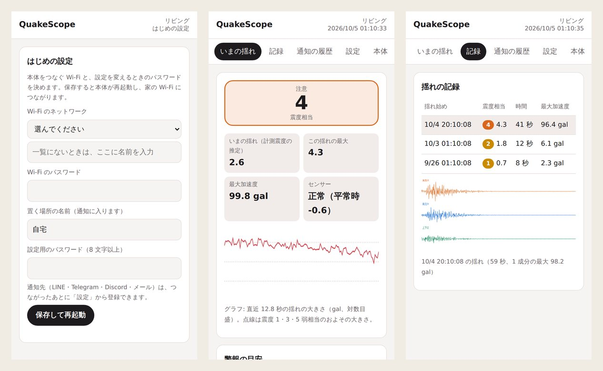
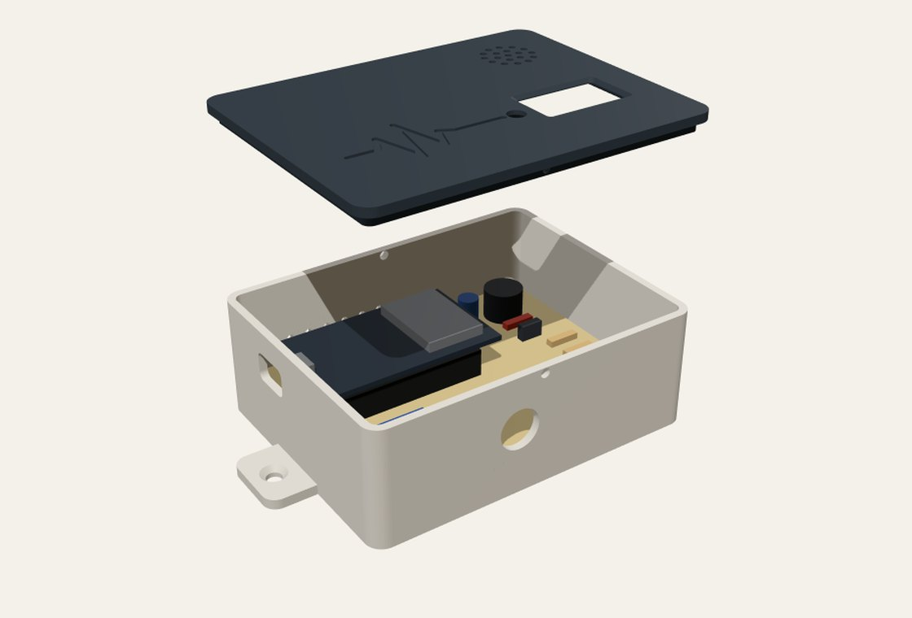
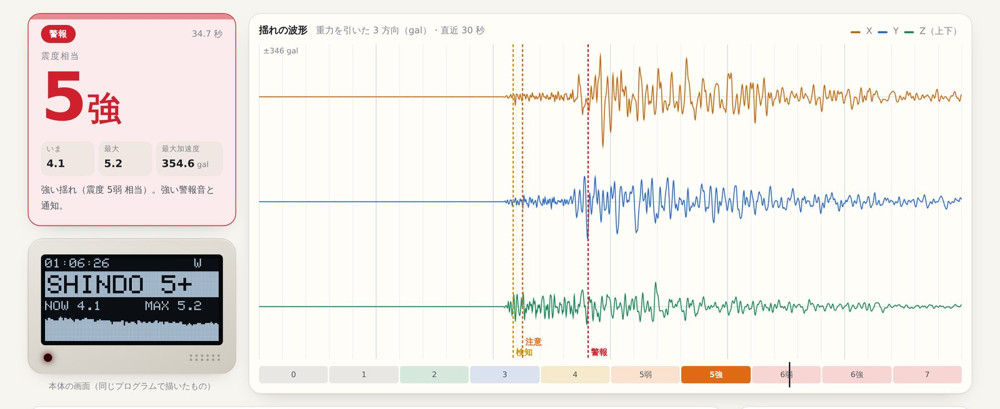

QuakeScope（揺れ検知アラーム）
置いた場所の揺れを測り、気象庁の「計測震度」と同じ考え方で震度相当を出す揺れ検知アラームです。強い揺れでは警報音を鳴らし、LINE・Telegram・Discord・メールに知らせます。Arduino Unoで作った試作機を、ESP32 1枚で、組み立てて使える製品の形に作り直しました。
概要
家に置いておき、揺れたら知らせてくれる装置です。値は置いた場所で測った揺れからの推定（参考値）で、気象庁の震度や緊急地震速報ではありません。通知の文にも必ずそう書き、ほかの場所の揺れや、これから来る揺れを予想することはしません。
| 本体 | ESP32-DevKitC-32E、MPU6050（加速度・100 Hz）、0.96″ OLED、電磁ブザー、フルカラー LED、押しボタン |
| 判定エンジン | C++17（端末に依存しない）。本体とブラウザー（WebAssembly）で同じソース |
| 警報 | 揺れ検知（震度 1 相当〜）・注意（震度 3 相当〜）・警報（震度 5 弱相当〜） |
| 通知 | LINE（Messaging API）・Telegram・Discord・メール（SMTP） |
| 記録 | 揺れの要約 50 件・揺れ始めの 5 秒前からの波形 8 件 |
| 部品代 | 約 4,500〜6,500 円（ケースを含む） |
構成図
データの流れに沿って、部品が順に光ります。
回路図
3D の部品を読み込んでいます
- 電源
- GND
- デジタル
- I²C
- シリアル・USB
ファームウェア（firmware/QuakeScope）のピンの割り当てにもとづく配線です。MPU6050 と OLED は I²C を共有します（I²C は 3.3V。5V に引き上げない）。ブザーは NPN トランジスター（2SC1815）で 5V から鳴らし、RGB LED はカソードコモンで各色に抵抗を入れます。ボタンは内部プルアップです。部品番号つきの回路図は GitHub の hardware/schematic.svg にあります。
揺れの最中に、震度相当を出す
気象庁の計測震度は、3 方向の加速度を周波数領域でフィルターにかけ、合わせた大きさが合計 0.3 秒以上になる値 a から I = 2 log10 a + 0.94 で求めます。記録が終わってからでないと計算できないため、本体では次のように近似しました。
- 気象庁のフィルターの周波数特性を、100 Hz で動く 2 次の IIR フィルター 5 段に合わせた（0.3〜12 Hz で差は最大 0.55 dB）
- 「0.3 秒の値」は「大きい方から 30 番目」なので、30 個だけ持つ最小ヒープで、メモリー一定のまま揺れの間ずっと更新
- 周波数領域で気象庁の手順どおりに計算する関数も書き、numpy で別に書いた計算と 10-6 以下で一致することを確かめた
揺れ始めと、誤報を防ぐしくみ
揺れ始め（P 波）は、1〜10 Hz の帯域で「直近 0.5 秒」と「10 秒」の強さの比（STA/LTA）でとらえます。ドアを閉めた衝撃や足音は一瞬だけ大きいので、「直近の最大の 1/4 を超える時間が 0.3 秒以上続いたか」で除きます。
MPU6050 は雑音が大きく（データシートで 400 µg/√Hz）、置いておくだけで計測震度 1.5 ほどになります。最初の版はこれを考えておらず、雑音を入れた見本で試すと、雑音だけで揺れと判定したり、揺れが終わらなくなったりしました。そこで、揺れていないときの震度を「雑音の床」として測り続け、それより 0.6 以上大きい揺れだけを扱うように直し、雑音の多いセンサーのテストを足しました。
- 震度 3 以上の近い地震は、強い揺れ（S 波）の前の P 波の段階で、1.5 秒以内にとらえる
- ドア・足音・トラックの振動では、注意・警報にならない
- その代わり、MPU6050 では震度 2 相当以下の小さな揺れは見逃すことがある（説明書にも明記）
製品として使えるように
はじめて電源を入れると、本体が自分の Wi-Fi を出します。スマホでつなぐと設定の画面が自動で開き、家の Wi-Fi と設定用のパスワードを入れるだけで使い始められます。

- センサーの読み取りと判定は優先度の高いタスク、通知は別のコアのタスクに分け、通信が遅くても判定が止まらない
- 1 回の揺れで同じレベルの通知は 1 度だけ。1 時間 12 通の上限をつけ、警報だけは上限に関係なく送る
- トークンやパスワードは本体の中だけに保存し、設定の画面には返さない。ファームウェアは Wi-Fi で更新できる
- センサーの値が止まる・重力の大きさがおかしい・値が届かない、を見つけて知らせる
回路・基板・ケース
回路図、ユニバーサル基板の部品の位置と配線表（穴の番号で 29 本）、3D プリントのケース、部品表、組み立て手順を GitHub にそろえました。配線表とケースは同じ配置のデータ（layout.json）から作るので、部品の位置を変えるとケースの穴も合わせて動きます。

ブラウザー版
判定エンジンを WebAssembly にして、ブラウザーで本体と同じ判定を動かしました。見本の地震とドアなどの振動を流したり、スマホの加速度センサーで測ったりできます。本体の小さな画面は、本体と同じ文字の点（Adafruit GFX のフォント）で描いています。「しくみと精度」のタブでは、精度の確かめをその場で計算します。

試作 1 号機から
最初の試作は、Arduino Uno・アナログの 3 軸加速度センサー・RTC・OLED・ESP-01S で作りました。作り直すときにコードを読み直し、次の問題を見つけて設計から直しています。

| 試作 1 号機 | QuakeScope | |
| 判定 | しきい値と比べる向きが逆で、揺れていないときに警報になっていた | 震度相当が基準を超えたときに判定し、テストで確かめる |
| P 波と S 波 | 揺れの大きさで分けていた | P 波はふだんとの比（STA/LTA）でとらえ、強さは震度相当で段階を分ける |
| 揺れの大きさ | 合成加速度と 1 G の差（傾きに弱い） | 重力の向きを 3 方向で測って引く（どの向きでも動く） |
| 読み取り | 50 ms ごと・不ぞろい | FIFO で 100 Hz ちょうど（別のタスク） |
| 通知 | ESP-01S に文字を送るだけ | 応答を見て 3 回まで送り直し、履歴に残す |